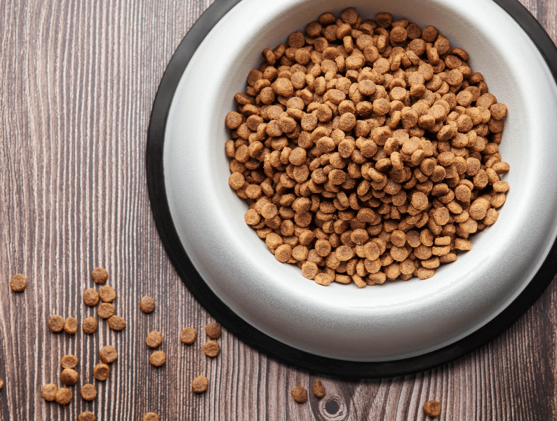

Kibble

Meet all of your nutritional needs with one small pellet!
Kibble is a palatable meal that is usually available 24/7.
It has been keeping me alive for a decade!
Making this dish takes 1-30 minutes depending on the attentiveness of your human.
Here's what you need:
- Kibble, 150g
- Bowl, any size
- Full bladder (optional)
Here's what you do:
- Check to see if your human is awake.
- If they are still sleeping, meow loudly in close proximity to their face.
- If they do not acknowledge you, walk on top of them (ideally on the head or stomach).
- Repeat steps 2 and 3 until they wake up.
If you have come prepared with a full bladder, you may empty it on your human's pillow now to expedite this process.
- Lead them to the kitchen. You may need to stop, stare, and meow at them throughout this step as they are often easily distracted.
- Increase meow volume as you watch them scoop the kibble into your bowl.
- Enjoy!
*Note* If you need a little extra entertainment, double your consumption speed. This will allow you to immediately purge the
undigested kibble which you can then watch your human clean up.
Back to Recipes